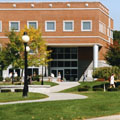

|  |
Dyson Center Close
Built in 1865
Office of the current College President |
Dyson Center, completed in August of 1990, houses the School of Management and the School of Social & Behavioral Sciences. It is named after Charles H. Dyson, a well-known businessman and philanthropist, and his late wife, Margaret. The building was Charles Dyson's 80th birthday present from his daughter and son.
The three-story 53,000 square foot building contains 23 classrooms and 68 faculty offices, as well as seminar rooms and a computer lab. The Office of Graduate and Continuing Education, the Bureau of Economic Research, and corporate educational training programs are also located here. Students enjoy Dyson's coffee shop, where they can grab a quick bite to eat between classes, or stay awhile and study.
The Dyson Center was built to fulfill the Marist's growing need for technology and space caused by renovations being made to Donnelly. The number of offices, classrooms, and seminar areas not only provided the students and faculty with adequate learning space, but with a prominent and technologically-advanced facility. It also served as the missing link connecting the North End with the center of campus, creating a more unified community.